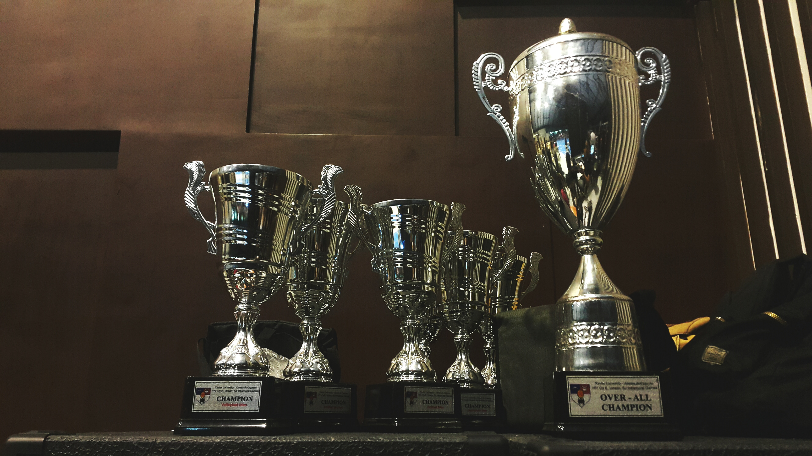

April 25, 2020
In our Graduation Project my group and I where assigned with the task of finding our client a new Student Response System that was able to enhance the learning
experience, while also saving the client money.


Using the Project Management Body of Knowledge we learned cutting-edge techniques for project planning, scheduling, budgeting, quality, communication, and
risk management .

Centered around conceptual data modeling techniques, converting the conceptual data models into relational
data models and verifying its structural characteristics with normalization techniques.

We where taught the industry best-practices relating to computer security including schemes for breaking security, and techniques for detecting and preventing security violations

We where given two datasets and told to wrangle, analyze, and visualize Statcast data to compare Mr. Judge and another
(extremely large) teammate of his. We'll use pandas DataFrames to store this data. While using data visualization
libraries, matplotlib and seaborn to analyze the data
.

We'll use pandas DataFrames to store this data. While using data visualization
libraries, matplotlib and seaborn to analyze the data

Currently working on more projects and they will be completed shortly!